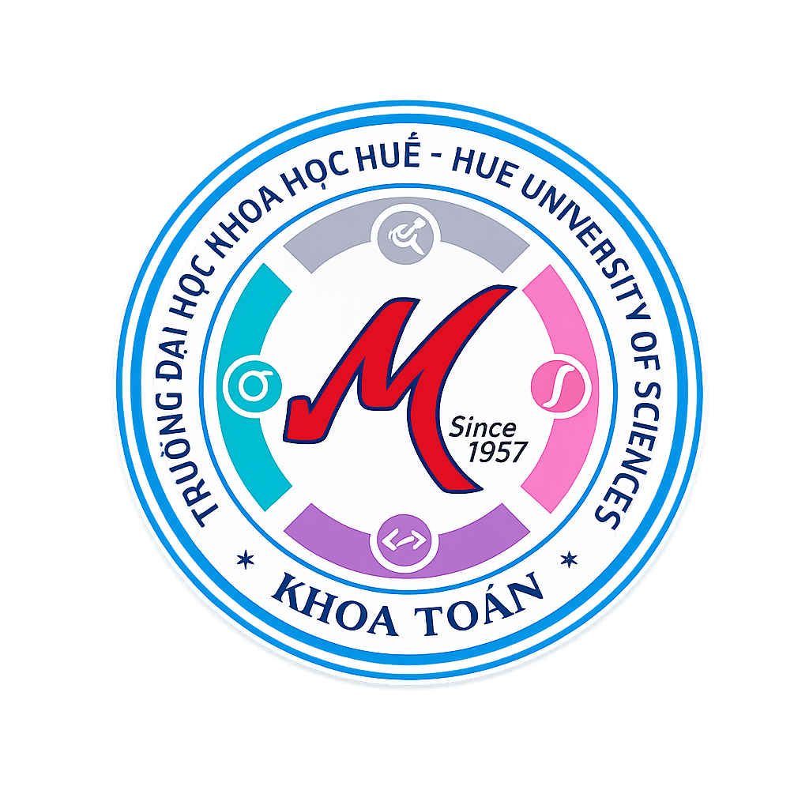
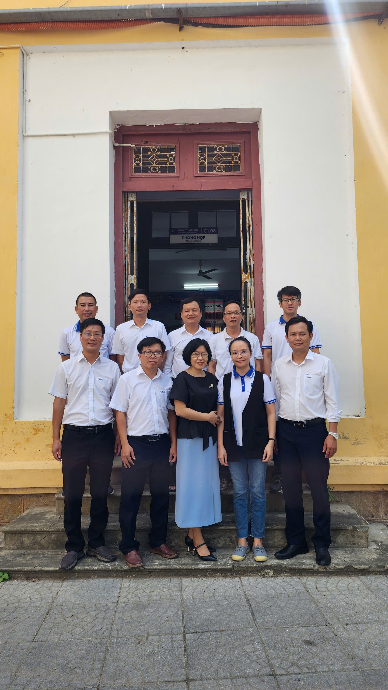

<meta charset="UTF-8">
<meta name="viewport" content="width=device-width, initial-scale=1.0">
<link rel="stylesheet" href="https://cdnjs.cloudflare.com/ajax/libs/font-awesome/6.0.0/css/all.min.css">
<link rel="stylesheet" href="../css/style.css">
<header class="husc-header">
        <div class="header-slider">
            <div class="slide" style="background-image: url('../graph/slide1.jpg');"></div>
            <div class="slide" style="background-image: url('../graph/slide2.jpg');"></div>
            <div class="slide" style="background-image: url('../graph/slide3.jpg');"></div>
        </div>

        <div class="header-overlay"></div>

        <div class="container header-content">
            <div class="logo-area">
                <a href="../index.html" class="logo-link">
                    <div class="logo-box">
                        
                    </div>
                    <div class="logo-divider"></div>
                    <div class="logo-title">
                        <p class="university-name">TRƯỜNG ĐẠI HỌC KHOA HỌC, ĐẠI HỌC HUẾ</p>
                        <h1 class="department-name">KHOA TOÁN HỌC</h1>
                    </div>
                </a>
            </div>

            <div class="mobile-menu-toggle">
                <i class="fas fa-bars"></i>
            </div>

            <nav class="husc-nav">
                <ul>
                    <li class="active"><a href="../index.html"><i class="fas fa-home"></i></a></li>
                    <li><a href="pages/70-nam-thanh-lap-khoa.html">70 Năm Thành Lập Khoa</a></li>
                    <li class="has-child">
                        <a href="#">Giới thiệu <i class="fas fa-chevron-down icon-small"></i></a>
                        <ul class="sub-menu">
                            <li><a href="pages/tong-quan.html">Tổng quan</a></li>
                            <li><a href="pages/doi-ngu-can-bo.html">Đội ngũ cán bộ</a></li>
                            <li><a href="pages/co-cau-to-chuc.html">Cơ cấu tổ chức</a></li>
                            <li class="has-child-lvl3">
                                <a href="#">Các bộ môn <i class="fas fa-chevron-right icon-small"></i></a>
                                <ul class="sub-menu-lvl3">
                                    <li><a href="pages/toan-ly-thuyet.html">Toán lý thuyết</a></li>
                                    <li><a href="pages/xac-suat-thong-ke.html">Xác suất thống kê</a></li>
                                    <li><a href="pages/toan-ung-dung.html">Toán ứng dụng</a></li>
                                </ul>
                            </li>
                        </ul>
                    </li>

                    <li class="has-child">
                        <a href="#">Đào tạo <i class="fas fa-chevron-down icon-small"></i></a>
                        <ul class="sub-menu">
                            <li><a href="pages/dao-tao-dai-hoc.html">Đào tạo đại học</a></li>
                            <li><a href="pages/dao-tao-sau-dai-hoc.html">Đào tạo sau đại học</a></li>
                            <li><a href="pages/tuyen-sinh-nam-2026.html">Tuyển sinh năm 2026</a></li>
                        </ul>
                    </li>
                    
                    <li class="has-child">
                        <a href="#">Tin Tức & Thông báo <i class="fas fa-chevron-down icon-small"></i></a>
                        <ul class="sub-menu">
                            <li><a href="pages/chuyen-muc.html?type=tin-tuc">Tin tức</a></li>
                            <li><a href="pages/chuyen-muc.html?type=thong-bao">Thông báo</a></li>
                            <li><a href="pages/chuyen-muc.html?type=hoc-bong">Học bổng</a></li>
                            <li><a href="pages/chuyen-muc.html?type=doan-hoi">Đoàn, Hội</a></li>
                        </ul>
                    </li>
                </ul> 
            </nav>
        <div class="husc-overlay"></div>
    </div>
</header>
<main id="main-content">
    <div class="container" style="padding: 40px 0;">
        <h2 class="section-title">TỔNG QUAN VỀ KHOA TOÁN</h2>
        <div class="title-line"></div>
        <h3>1. Lịch sử hình thành và phát triển</h3>
            <p>Ngành Toán của Đại học Khoa học Huế là một trong những ngành ra đời sớm nhất ở Viện Đại học Huế, 
                    đồng thời với sự thành lập Viện Đại học Huế vào ngày 1 tháng 3 năm 1957. Tháng 10 năm 1976, Trường Đại học Tổng hợp Huế được thành lập trên cơ sở sát nhập Đại học Khoa học 
                    và Đại học Văn Khoa của Viện Đại học Huế. Khoa Toán – Lý thuộc Trường Đại học Tổng hợp Huế cũng được hình thành, 
                    với sự tiếp nhận đội ngũ giảng viên toán còn lại của Đại học Khoa học (dưới 10 người) 
                    và bổ sung một số cán bộ được đào tạo từ Hà Nội và các nước thuộc khối Đông Âu. Tháng 6 năm 1988, Khoa Toán – Cơ – Tin học được chính thức tách ra từ Khoa Toán – Lý 
                    và cấu tạo thành 3 Bộ môn: Toán lý thuyết, Toán ứng dụng và Cơ học. Năm 1994 Đại học Huế được tái thành lập và Đại học Tổng hợp Huế được đổi tên là Đại học Khoa học, 
                    trở lại là thành viên của Đại học Huế. Lúc này ngành Cơ học không còn được đào tạo nên đến 
                    năm 1996 Khoa được sắp xếp lại thành 4 Bộ môn: Giải tích, Đại số, Toán ứng dụng và Xác suất Thống kê. 
            </p>
            <div class="about-image-container">
                        
            </div>    
            <p>Khoa Toán là một trong những đơn vị của trường thực hiện có hiệu quả công tác nghiên cứu khoa học. 
                    Nhiều đề tài cấp Nhà nước, đề tài cấp Bộ, cấp Cơ sở thường xuyên được triển khai và những kết 
                    quả nghiên cứu đã được công bố trên hàng trăm bài báo, được đăng tải trên các tạp chí 
                    chuyên ngành trong và ngoài nước, trong đó có nhiều tạp chí thuộc hệ thống ISI. 
                    Nhiều cán bộ của khoa thường xuyên đi trao đổi chuyên môn hoặc giảng dạy tại các 
                    trường đại học hoặc viện nghiên cứu nước ngoài. Hàng chục giáo trình và sách chuyên khảo có chất lượng cao do cán bộ của khoa biên soạn đã 
                    lần lượt được xuất bản để phục vụ công tác giảng dạy và nghiên cứu. Qua gần 70 năm đào tạo, nhiều thế hệ sinh viên tốt nghiệp từ Khoa Toán đã hòa nhập được 
                    với môi trường thực tế và có thể tham gia công tác ở nhiều lĩnh vực khác nhau như giáo dục đào tạo, 
                    tài chính, ngân hàng, kế toán, bưu điện, công nghệ thông tin.
            </p>

        <h3>2. Sứ mạng và Tầm nhìn</h3>
        <p>
            <strong>Sứ mạng:</strong> Khoa Toán có sứ mạng đào tạo và phát triển nguồn nhân lực chất lượng cao trong lĩnh vực Toán học và các lĩnh vực liên ngành dựa trên nền tảng Toán học; thực hiện nghiên cứu cơ bản và ứng dụng, góp phần xây dựng nền tảng khoa học – công nghệ và năng lực tư duy định lượng phục vụ cho quá trình chuyển đổi số, phát triển bền vững của khu vực miền Trung – Tây Nguyên và cả nước.
        </p>
        <p>
            <strong>Tầm nhìn:</strong> Đến năm 2030, khoa Toán trở thành đơn vị đào tạo và nghiên cứu Toán học có uy tín trong khu vực miền Trung – Tây Nguyên; là điểm đến tin cậy của người học, doanh nghiệp và cộng đồng khoa học, từng bước khẳng định vị thế trong mạng lưới đào tạo – nghiên cứu tiên tiến của cả nước.
        </p>

        <h3>3. Đội ngũ cán bộ</h3>
        <p>
            Khoa tự hào sở hữu đội ngũ giảng viên có trình độ chuyên môn cao, tâm huyết với nghề. Đa số giảng viên đều có học vị Tiến sĩ, học hàm Phó Giáo sư, được đào tạo bài bản tại các quốc gia có nền Toán học phát triển như Pháp, Đức, Nga, Nhật Bản...
        </p>
        <p>
            Các thầy cô không chỉ tham gia giảng dạy mà còn là những nhà khoa học có nhiều công trình nghiên cứu được công bố trên các tạp chí quốc tế uy tín thuộc danh mục ISI/Scopus.
        </p>

        <h3>4. Hệ thống đào tạo</h3>
        <p>
            Hiện nay, Khoa Toán học đang triển khai chương trình đào tạo đa bậc và đa ngành, đáp ứng nhu cầu cấp thiết của thị trường lao động hiện đại. Ở bậc Đại học, Khoa đào tạo các chuyên ngành: Cử nhân Toán học, Cử nhân Quản trị & Phân tích dữ liệu, và Cử nhân Khoa học dữ liệu.
        </p>
        <p>
            Đối với bậc sau Đại học, Khoa đào tạo Thạc sĩ chuyên ngành Toán học. Ngoài ra, Khoa còn đảm nhiệm việc giảng dạy các môn Toán cơ bản cho toàn bộ khối ngành kỹ thuật, công nghệ và kinh tế của nhà trường, cũng như bồi dưỡng học sinh năng khiếu tại hệ THPT Chuyên.
        </p>

        <h3>5. Nghiên cứu khoa học và Hợp tác quốc tế</h3>
        <p>
            Nghiên cứu khoa học là trụ cột quan trọng tại Khoa. Các hướng nghiên cứu mũi nhọn bao gồm: Đại số, Hình học và Tô pô; Giải tích toán học và Phương trình vi phân; Xác suất thống kê và Toán tài chính; Tối ưu hóa và Khoa học tính toán.
        </p>
        <p>
            Khoa thường xuyên tổ chức các hội nghị, hội thảo quốc tế và duy trì mối quan hệ hợp tác chặt chẽ với Viện Toán học Việt Nam, cùng nhiều trường Đại học danh tiếng trên thế giới để tạo điều kiện cho sinh viên và giảng viên trao đổi học thuật.
        </p>

        <h3>6. Cơ hội nghề nghiệp</h3>
        <p>
            Sinh viên tốt nghiệp Khoa Toán học có cơ hội việc làm rộng mở trong kỷ nguyên công nghiệp 4.0. Cử nhân Toán học đang trở thành "mắt xích" quan trọng trong các lĩnh vực như: Công nghệ thông tin (Lập trình AI, chuyên gia thuật toán), Tài chính - Ngân hàng (Phân tích rủi ro), Kinh doanh (Data Analyst) và Giáo dục chất lượng cao.
        </p>
        
    </div>
</main>
<footer class="main-footer">
        <div class="container">
            <div class="grid-footer">
                <div class="footer-col">
                    <h4>LIÊN HỆ</h4>
                    <div class="footer-links">
                        <a><i class="fas fa-map-marker-alt"></i> 77 Nguyễn Huệ, TP. Huế</a>
                        <a href="mailto:maths@husc.edu.vn"><i class="fas fa-envelope"></i> maths@husc.edu.vn</a>
                        <a href="tel:02343828427"><i class="fas fa-phone"></i> (0234) 3 82 8427</a>
                        <a href="https://www.facebook.com/share/1Cx1XNmVmE/" target="_blank"><i class="fab fa-facebook-f"></i> Fanpage Khoa Toán</a>
                    </div>
                </div>
                
                <div class="footer-col">
                    <h4>LIÊN KẾT NHANH</h4>
                    <div class="footer-links">
                        <a href="pages/dao-tao-dai-hoc.html"><i class="fas fa-graduation-cap"></i> Đào tạo đại học</a>
                        <a href="pages/dao-tao-sau-dai-hoc.html"><i class="fas fa-user-graduate"></i> Đào tạo sau đại học</a>
                        <a href="https://tuyensinh.husc.edu.vn/nganhdaotao-dh.php?manganh=7460108" target="_blank"><i class="fas fa-bullhorn"></i> Thông tin tuyển sinh</a>
                    </div>
                </div>

                <div class="footer-col">
                    <h4>KẾT NỐI</h4>
                    <div class="footer-links">
                        <a href="https://hueuni.edu.vn/" target="_blank"><i class="fas fa-university"></i> Đại học Huế</a>
                        <a href="https://husc.edu.vn/" target="_blank"><i class="fas fa-school"></i> Trường ĐH Khoa học</a>
                    </div>
                </div>
            </div>

            <div class="footer-bottom">
                &copy; 2026 Khoa Toán - Đại học Khoa học, Đại học Huế.
            </div>
        </div>
    </footer>
<script src="../js/app.js"></script>